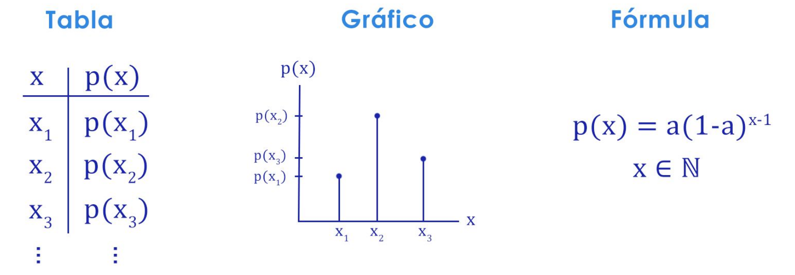
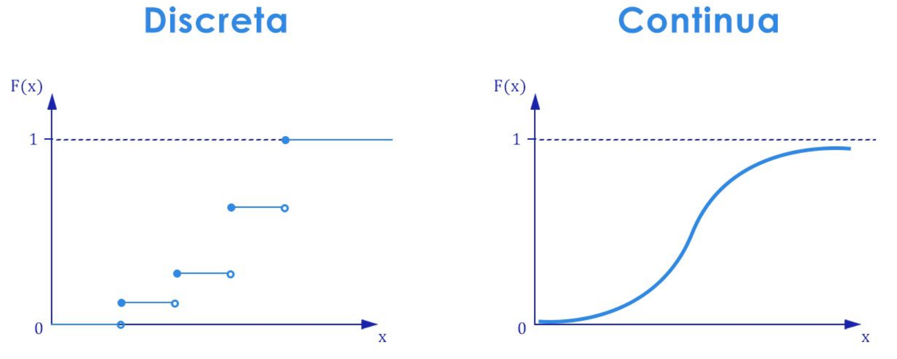

2. Variable Aleatoria
Introducción
Un basquetbolista tiene una tasa de encestos del 60%. Esto implica que en un tiro al aro tiene un 60% de probabilidad de encestar y un 40% de fallar. ¿Cuál es la probabilidad de que deba lanzar dos veces para eventualmente encestar? Suponiendo que los tiros son independientes entre sí, la probabilidad de fallar el primer tiro y acertar el segundo es \(0,4 \times 0,6 = 0,24\). ¿Cuál es la probabilidad de que deba lanzar tres veces para finalmente encestar? Siguiendo la misma lógica obtenemos \(0,4 \times 0,4 \times 0,6 = 0,096\).
Podríamos seguir este procedimiento infinitamente: para cualquier número natural \(n\) es posible calcular la probabilidad de que el basquetbolista falle los primeros \(n-1\) tiros y finalmente enceste el último. De hecho, definiendo la variable
\[X: \text{ número de tiros que realiza el basquetbolista hasta encestar}\]
es fácil ver que la probabilidad de encestar en el \(n\)-ésimo tiro está dada por
\[P(X = n) = (0,4)^{n-1} \times 0,6 \qquad \forall \quad n \in \mathbb{N}.\]
Esta ecuación comprime de forma eficiente la información necesaria para calcular la chance de ocurrencia de cualquier resultado posible. De no tenerla, tendríamos que definir un evento para cada resultado.
- \(A\): el basquetbolista encesta al primer tiro \(\implies A = \{(Si)\}\)
- \(B\): el basquetbolista encesta al segundo tiro \(\implies B = \{(No, Si)\}\)
- \(C\): el basquetbolista encesta al tercer tiro \(\implies C = \{(No, No, Si)\}\)
\(\cdots\)
Es por ello que surgen las variables aleatorias.
Variable aleatoria
Supóngase un experimento aleatorio sobre el que se define un espacio muestral \(S\). Se llama variable aleatoria a la función \(X\) que asigna a cada uno de los elementos \(s \in S\) un número real \(X(s)\).
En el ejemplo introductorio, el experimento aleatorio es “lanzar al aro hasta encestar” y el espacio muestral es \(S=\){(Sí), (No, Sí), (No, No, Sí), \(\cdots\)}. Bajo la definición ya dada para la variable aleatoria \(X\), esta función no hace más que contar el número de tiros en cada resultado:
\[s = (Si) \implies X(s) = 1\] \[s = (No, Si) \implies X(s) = 2\] \[s = (No, No, Si) \implies X(s) = 3\]
En el ejemplo introductorio se define \(X\) como el “número de tiros hasta encestar”. Nótese la diferencia entre una variable aleatoria y un evento aleatorio. El evento suele escribirse como una afirmación, valiéndose de un verbo (por ejemplo, “el dado arrojado resulta en un número par”). Como tal, un evento sólo admite dos resultados posibles: ocurrir o no ocurrir. En cambio, una variable es un atributo, el cual puede tomar múltiples valores.
Como a cada elemento del espacio muestral le corresponde un número real, es sensato preguntarse cuáles son todos los posibles números reales que podrían obtenerse en un cierto experimento. Dicho de otro modo, podríamos preguntarnos cuáles son todos los valores que puede tomar la variable \(X\). Este conjunto se conoce como recorrido de \(X\) y se simboliza con \(R_X\).
\[R_X = \{x \in \mathbb{R} : X(s) = x \;;\; s \in S\}\]
Por ejemplo, para un experimento con sólo tres resultados posibles se tiene \(S=\{s_1, s_2 ,s_3\}\) y por lo tanto \(R_X = \{X(s_1), X(s_2), X(s_3)\}\). En el ejemplo del basquetbolista se tiene que \(R_X = \mathbb{N}\), o sea que el número de tiros hasta encestar puede ser cualquier número natural. Algo interesante de este último caso es que el conjunto tiene infinitos elementos. En general, \(R_X\) puede ser un conjunto:
- finito.
- infinito numerable.1
- infinito no numerable.
El tamaño de \(S\) no siempre es igual al tamaño de \(R_X\). Tómese como ejemplo el experimento de arrojar dos monedas al aire en simultáneo. El espacio muestral tiene cuatro elementos, porque \(S=\{(C,C), (C,X), (X,C), (X,X)\}\), pero si definimos una variable aletoria \(X\) que cuenta el número de cruces, se tiene que \(R_X = \{0, 1, 2\}\). Esto es porque se tienen dos resultados del espacio muestral que bajo la función \(X\) devuelven el mismo número real.
Tipos de variable aleatoria
Según la cardinalidad del recorrido de \(X\) (es decir, según si \(R_X\) es un conjunto finito, infinito numerable o infinito no numerable), una variable aleatoria puede clasificarse en uno de dos tipos: discreta o continua.
Variable aleatoria discreta
Sea \(X\) una v.a.2 definida sobre un espacio muestral \(S\). Se dice que \(X\) es una variable aleatoria discreta si su recorrido es un conjunto finito o infinito numerable.
Ejemplos de variables aleatorias discretas son los siguientes:
- Demanda de un cierto producto.
- Número de aces en un partido de tenis.
- Cantidad de senadores que votan en contra de una ley.
- Número de ventas anuales en Amazon.
Supongamos un recorrido \(R_X = \{x_1, x_2, x_3, \cdots\}\) a lo sumo numerable. Para cada resultado posible \(x_i\) puede asociarse un número \(p(x_i) = P(X = x_i)\). Esta función es denominada función de probabilidad puntual de \(X\).
La función \(p(x)\) verifica dos propiedades importantes:
- \(p(x) > 0 \quad \forall \quad x \in R_X\) (condición de positividad)
- \(\sum_{x \in R_X} p(x) = 1\) (condición de cierre)
Ejemplo 1
Se arrojan 3 monedas equilibradas al aire y se registra para cada una si el resultado es cara o cruz. Sea \(X\) la variable que registra el número de cruces obtenidas. Definir su función de probabilidad.
Solución:
- Experimento aleatorio: arrojar 3 monedas al aire y registrar la cara superior de cada una.
- Espacio muestral: \(S = \{CCC, CCX, CXC, CXX, XCC, XCX, XXC, XXX\}\).
- Ejemplo de resultado: \(s = CCX\).
- Variable aleatoria: \(X\): número de cruces obtenidas.
- Recorrido: \(R_X = \{0, 1, 2, 3\} \implies \#R_X = 4\) (finito).
La función de probabilidad surge de las siguientes probabilidades:
- \(p(0) = P(X = 0) = P(s \in \{CCC\}) = \frac{1}{8}\)
- \(p(1) = P(X = 1) = P(s \in \{CCX, CXC, XCC\}) = \frac{3}{8}\)
- \(p(2) = P(X = 2) = P(s \in \{XXC, XCX, CXX\}) = \frac{3}{8}\)
- \(p(3) = P(X = 3) = P(s \in \{XXX\}) = \frac{1}{8}\)
Nótese que se verifican tanto la condición de positividad como la de cierre:
- Positividad: \(\frac{3}{8} > \frac{1}{8} > 0\) (todos los resultados son positivos)
- Cierre: \(\frac{1}{8} + \frac{3}{8} + \frac{3}{8} + \frac{1}{8} = \frac{8}{8} = 1\)
Al conjunto de pares \((x, p(x))\) se lo llama distribución de probabilidad de la v.a. \(X\), denotada como \(X \sim p(x)\)3. Para una v.a. discreta existen tres formas de representar su distribución de probabilidad: como tabla, como gráfico o como fórmula.

Variable aleatoria continua
Sea \(X\) una v.a. definida sobre un espacio muestral \(S\). Se dice que \(X\) es una variable aleatoria continua si su recorrido es un conjunto infinito no numerable.
Ejemplos de variables aleatorias continuas son los siguientes:
- Producto Bruto Interno.
- Duración del vuelo AR1300 (EZE-JFK), en minutos.
- Valor del dólar en relación al precio argentino.
Ante una variable aleatoria continua ya no podemos hablar de \(x_i\), visto que no existe un \(i\)-ésimo valor de la variable.
Para toda v.a. continua \(X\) se tiene que \(P(X=x) = 0\). Es decir que las probabilidades puntuales son todas nulas. En su lugar, conviene estudiar la probabilidad de que \(X\) tome un valor en un entorno de \(x\), lo cual se logra con una función particular.
Se denomina función de densidad de probabilidad de \(X\) a aquella función \(f(x)\) que verifica:
- \(f(x)>0 \quad \forall \quad x \in R_X\) (condición de positividad)
- \(\int_{R_X} f(x) \; dx = 1\) (condición de cierre)
Ejemplo 2
Una empresa láctea vende sachets de yogur de un litro. La máquina que llena los envases no funciona a la perfección, por lo que el verdadero contenido de yogur puede variar entre envases. Se sabe que la variable ``litros de yogur en un sachet’’ (llamémosla \(X\)) se distribuye siguiendo la función de densidad a continuación: \[f(x) = K(4x - x^2) \qquad \forall \quad 0<x<2\] ¿Cuál es el valor del número real \(K\)?
Solución:
- Experimento aleatorio: usar la máquina para llenar un sachet de yogur.
- Variable aleatoria: \(X\): litros de yogur en un sachet.
- Recorrido: \(R_X = [0, 2] \subset \mathbb{R}\) (infinito no numerable).
Por condición de cierre: \[\int_0^2 K(4x-2x^2) \; dx = K(2x^2 - \tfrac{2}{3}x^3) |_0^2 = K(8 - \tfrac{16}{3}) = \tfrac{8}{3} \implies K = \tfrac{3}{8}\]
Función de distribución
Sea \(X\) una v.a. cualquiera (discreta o continua), llamamos función de distribución acumulada de \(X\) a la función: \[F(x) = P(X \leq x) \quad \forall \quad x \in \mathbb{R}.\]
Esta definición puede particularizarse para cada tipo de variable aleatoria:
- Discreta: \(F(x) = \sum_{x_i \leq x} p(x_i)\)
- Continua: \(F(x) = \int_{-\infty}^x f(t) \; dt\)

La función de distribución acumulada goza de tres propiedades:
- Es monótona no decreciente: \(x_1 < x_2 \implies F(x_1) \leq F(x_2)\)
- Está acotada entre 0 y 1: \(\lim_{x \to -\infty} F(x) = 0\) y \(\lim_{x \to +\infty} F(x) = 1\)
- Es continua por derecha: \(\lim_{x \to x_0^+} F(x) = F(x_0)\)
Esperanza y variancia
Esperanza
Definiremos la esperanza por separado para cada tipo de variable aleatoria.
Caso discreto: Sea \(X\) una v.a. discreta con función de probabilidad \(p(x)\), se define la esperanza (o valor esperado) de \(X\) como: \[E(X) = \sum_{x_i \in R_X} x_i \cdot p(x_i)\]
Caso continuo: Sea \(X\) una v.a. continua con función de densidad \(f(x)\), se define la esperanza de \(X\) como: \[E(X) = \int_{R_X} x \cdot f(x) \; dx\]
Se hacen las siguientes observaciones sobre la esperanza:
- La esperanza puede no existir. La condición para su existencia es la convergencia de la serie (en el caso discreto) o de la integral impropia (en el caso continuo).
- Si \(R_X\) es finito, la esperanza de \(X\) se obtiene como una suma finita y por lo tanto existe .
- La esperanza representa el “centro de gravedad” de la distribución de probabilidad.
- La esperanza es un parámetro; no debe confundirse con el concepto de promedio o media aritmética.
Variancia
Nuevamente, se establece una definición para cada tipo de variable aleatoria.
Caso discreto: Sea \(X\) una v.a. discreta con función de probabilidad \(p(x)\), se define la variancia de \(X\) como: \[V(X) = \sum_{x_i \in R_X} [x_i - E(X)]^2 \cdot p(x_i)\]
Caso continuo: Sea \(X\) una v.a. continua con función de densidad \(f(x)\), se define la variancia de \(X\) como: \[V(X) = \int_{R_X} [x-E(X)]^2 \cdot f(x) \; dx\]
La definición de \(V(X)\) es equivalente a una expresión más sencilla de calcular, que frecuentemente se utiliza en la práctica para simplificar los cálculos: la fórmula de trabajo de \(V(X)\). \[V(X) = E(X^2) - [E(X)]^2 = E(X^2) - E^2(X)\]
Ejemplo 3
Calcular la Esperanza y Variancia para la variable aleatoria definida en el Ejemplo 1.
Solución: lo vemos en clase. 😉
Propiedades de E(X) y V(X)
Se cumplen las siguientes propiedades para la Esperanza y Variancia de una variable aleatoria.
Esperanza:
- \(X=c\) con prob. 1 \(\implies E(X) = c\)
- \(E(X+a) = E(X) + a\)
- \(E(c \cdot X) = c \cdot E(X)\)
- \(E(c \cdot X + a) = c \cdot E(X) + a\)
Variancia:
- \(X=c\) con prob. 1 \(\implies V(X) = 0\)
- \(V(X+a) = V(X)\)
- \(V(c \cdot X) = c^2 \cdot V(X)\)
- \(V(c \cdot X + a) = c^2 \cdot V(X)\)
Distribuciones de probabilidad
Próximamente. 🚧
Algunos conjuntos infinitos permiten enumerar todos sus elementos, como sucede por ejemplo para el caso de los números naturales: \(\mathbb{N} = \{1, 2, 3, \cdots\}\). Estos son ejemplos de infinitos numerables. Existen otros conjuntos infinitos, sin embargo, que no permiten tal enumeración. Un claro ejemplo son los números reales (\(\mathbb{R}\)).↩︎
Por comodidad, en ocasiones adoptamos esta forma de abreviar “variable aleatoria”.↩︎
Se lee “\(X\) se distribuye como una \(p(x)\)”.↩︎